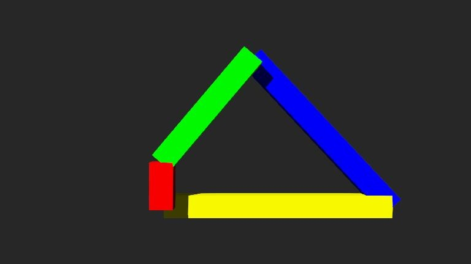
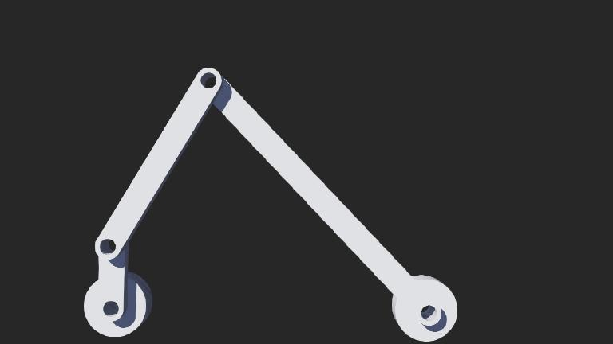

w15 <<
Previous Next >> Tutorial
w16
本週內容檢查了個學員至今為止完成的HW1、HW2內容，於課程上完成所要求內容及其下載檔案
w16-HW1-text.7z
w16-HW2-text.7z
- HW1所要求將曲柄(紅色桿)改為0.2m

2. 將HW2驅動桿也改為0.2m及將link3桿件改為1m

心得：
以上的HW1及HW2的理解及如何修改尺寸都能很順心的完成，藉由在課後的不斷練習和課堂上與導師的討論得知，最後在幫助同學上幫助其解決問題等，這樣的經驗積累，讓我現在在這兩項HW上能得心應手。
認為可能還需加強的點為可能是在webot及其HW1、2的相關應用及其設計上為什麼是這樣設計的或為什麼要這樣做而感到錯愕，例如我在被問到問題時，前面看同學被問的關於webots如何開啟、如何製作HW1過程等，這些問題當下可能還覺得可以回答得上來，但後面及到我時被問到問題時關於webots 設計HW1時為什麼要用robot這樣問題時，當下確實是有想到因為只有這個才有控制器(controller)來控制四連桿，但對於webots其實內部功能還不太多理解所以不確定，而另一個問題是真的當下不知道怎麼回答。
題為：為什麼link1一開始要設計為90度，當下其實認為0度也是可以轉，但就是想不到90度或用0度有甚麼好壞，事後理解得知四連桿的曲炳在初始角度為90度時因力矩原理的原因利於馬達帶動轉動和避開了發生死點的問題，這些部分我想可能就是需要補強的是自身關於基本的力學的觀念不夠紮實。
w15 <<
Previous Next >> Tutorial